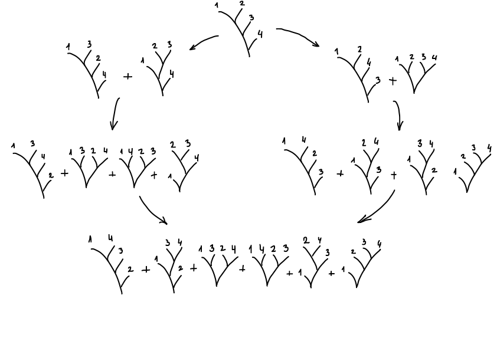
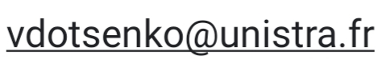

It is not uncommon these days for researchers in mathematics to use their professional homepage to express their thoughts on current political and societal affairs. In my opinion, these matters are much less important than our duty to Mathematics, and there is just one principle that informs my professional activity, which is best summarized by the following quotiation from Mathematics as Profession and Vocation by Yuri Ivanovich Manin: "arguably the primary social function of science, as social institution in our days, consists in stopping the frenetic activity of post-industrial society".
I am an algebraist; a meaningful description of my work would says that I apply abstract algebraic theories, such as
homotopical algebra (in the sense of Quillen) and the theory of operads in various very concrete situations, and I apply concrete
methods (such as Gröbner-Shirshov bases for various algebraic structures, and explicit combinatorial constructions)
for various theoretical purposes. In a nutshell, I tend to apply things where they do not belong. The following image gives
some idea of the above slogan: it proves that the Jacobi identity, the defining property of Lie algebras, forms a Gröbner basis of the shuffle operad corresponding to
the operad controlling Lie algebras.

Of course, one sees some combinatorics, since the calculus of shuffle operads uses labelled rooted trees. There is also some homological algebra, since this calculation gives the shortest proof of the Koszul property of the operad of Lie algebras (this property means that the Quillen homology of this operad is well behaved). That latter property guarantees that various general methods are available to study the homotopy category of differential graded Lie algebras; these methods are central in modern deformation theory. Representation theory appears here as well: the Koszul property allows, via a computation of Euler characteristics of certain chain complexes, to describe the representations of symmetric groups in each component Lie(n), and then to describe the action of the general linear group on the free Lie algebra.
I am often asked to suggest introductory reading on the operad theory. Here are two suggestions. First, there is a remarkable recent monograph Algebraic operads by Jean-Louis Loday and Bruno Vallette. Second, in collaboration with Murray Bremner, I wrote the book Algebraic operads: an algorithmic companion which may be a bit more accessible to the reader without a steady background in homology and homotopy.
Note: any other researcher profiles featuring my work that you may find online are either obsolete or maintained without my involvement or authorization.
Publications
For most of the publications listed below, clicking on the button "Details" will give you a couple of sentences containing some information about the mathematical content of that publication.
A nearly final version, free to view and download for personal use only (not for re-distribution, re-sale or use in derivative works), is available as arXiv:2212.11323.
Vladimir Dotsenko and Andrea Solotar, Algebraic versions of T2 and of P1×P1 and Hochschild cohomology, preprint arXiv:2511.18073.
We examine the Hochschild cohomology for triangular algebras that capture some aspects of geometry and topology of the torus and of the quadric surface, and for deformations of these algebras. In particular, this shows that the cup product on Hochschild cohomology of a triangular algebra does not generally follow the intuition coming from monomial algebras.
Frédéric Chapoton and Vladimir Dotsenko, Yamaguti algebras and noncrossing partitions, preprint arXiv:2510.03148.
Recently, Das defined a new type of algebras, the Yamaguti algebras, which are supposed to serve as envelopes of Lie-Yamaguti algebras appearing naturally in differential geometry. We show that the nonsymmetric operad of Yamaguti algebras admit a simple combinatorial description via noncrossing partitions without singleton blocks.
Vladimir Dotsenko, Eduardo Hoefel, Sergey Shadrin, Grigory Solomadin, Operads of moduli spaces of points in Cd revisited, preprint arXiv:2509.20331.
We study the operad structure on the homology of moduli spaces of pointed rooted trees of d-dimensional projective spaces, introduced by Chen, Gibney and Krashen a couple of decades ago. We describe this operad by generators and relations, show that it is homotopy Koszul, exhibit a Givental-type action on representations of that operad, and prove that this operad represents the homotopy quotient of the operad of chains of S1-framed little 2d-disks by its natural circle action. Our approach also sheds new light on the d=1 case, revealing a new combinatorial way to write the original Givental formulas.
Vladimir Dotsenko and Irvin Roy Hentzel, On the conjecture of Kashuba and Mathieu about free Jordan algebras, preprint arXiv:2507.00437.
Kashuba and Mathieu proposed a conjecture on vanishing of Lie algebra homology, implying a description of the GLd-module structure of the free d--generated Jordan algebra. Their conjecture relies on a functorial version of the Tits-Kantor-Koecher construction that builds Lie algebras out of Jordan algebras. In this note, we summarize new intricate computational data concerning free Jordan algebras and explain why, despite a lot of overwhelmingly positive evidence, the conjecture of Kashuba and Mathieu is not true.
Vladimir Dotsenko and Sergey Mozgovoy, Global Weyl modules for thin Lie algebras are finite-dimensional, preprint arXiv:2411.17550.
The notion of Weyl modules, both local and global, goes back to Chari and Pressley in the case of affine Lie algebras, and has been extensively studied for various Lie algebras graded by root systems. We extend that definition to a certain class of Lie algebras graded by weight lattices and prove that if such a Lie algebra satisfies a natural "thinness" condition, then already the global Weyl modules are finite-dimensional. Our motivating example of a thin Lie algebra is the Lie algebra of polynomial Hamiltonian vector fields on the plane vanishing at the origin. We also introduce stratifications of categories of modules over such Lie algebras and identify the corresponding strata categories.
Yvain Bruned and Vladimir Dotsenko, Chain rule symmetry for singular SPDEs, preprint arXiv:2403.17066.
We characterise the chain rule symmetry for the geometric stochastic heat equations in the full subcritical regime for Gaussian and non-Gaussian noises. We show that the renormalised counter-terms that give a solution invariant under changes of coordinates are generated by iterations of covariant derivatives. The result was known only for space-time white noises, with a very specific proof that so far could not be extended to the general case. The key idea of the present paper is to change the perspective on several levels and to use ideas coming from operad theory and homological algebra. Concretely, we introduce the operad of Christoffel trees that captures the counter-terms of the renormalised equation; our main new insight is to describe the space of invariant terms homologically, using a suitable perturbation of the differential of the operadic twisting of that operad. As a consequence, we obtain the correct renormalisation for the quasi-linear KPZ equation in the subcritical regime completing the programme started by Hairer and Gerencser. Previously, the main algebraic tool used in the study of singular SPDEs were Hopf algebras of decorated trees; our work shows that operad theory and homological algebra add new powerful tools with immediate applications to open problems that were out of reach by other methods.
Yvain Bruned and Vladimir Dotsenko, Novikov algebras and multi-indices in regularity structures, preprint arXiv:2311.09091.
In this work, we introduce multi-Novikov algebras, a multi-operation generalisation of Novikov algebras, and show that the multi-indices recently introduced in the context of singular
stochastic partial differential equations can be interpreted as free multi-Novikov algebras. This is parallel to the fact that decorated rooted trees arising in the context of regularity structures are related to free
multi-pre-Lie algebras.
Refereed journal papers
Vladimir Dotsenko, Evgeny Feigin, Piotr Kucharski, Markus Reineke, Categorification of quiver diagonalization and Koszul algebras, to appear in Publications of the Research Institute for Mathematical Sciences.
This paper proves a conjecture that originates in earlier work of three of the authors. Concretely, they associated a supercommutative quadratic algebra to each symmetric quiver, and used it to obtain a new proof of positivity of motivic Donaldson-Thomas invariants. It was furthermore conjectured that for each symmetric quiver such an algebra is Koszul. In this work, the linking and unlinking operations on symmetric quivers of Ekholm, Longhi and the third author are liften to the level of quadratic algebras, and used to prove the Koszulness conjecture. Also available as preprint arXiv:2402.12768.
Vladimir Dotsenko, On the conjecture of Shang about free alternative algebras, to appear in Israel Journal of Mathematics.
Kashuba and Mathieu proposed a conjecture on vanishing of some components of the homology of certain Lie algebras, implying a description of the GLd-module structure of the free d-generated Jordan algebra. Their conjecture relies on a functorial version of the Tits-Kantor-Koecher construction that builds Lie algebras out of Jordan algebras. Recently, Shang used a functorial construction of Allison, Benkart and Gao that builds Lie algebras out of alternative algebras to propose another conjecture on vanishing of some components of the homology of certain Lie algebras, implying a description of the GLd-module structure of the free d-generated alternative algebra. In this note, the conjecture of Shang is disproved. In comparison, the existing evidence for the Kashuba-Mathieu conjecture appeared overwhelmingly positive; however, it is also disproved in my paper with Hentzel. Also available as preprint arXiv:2503.16074.
In this paper I proved a conjecture of Chapoton from 2010 stating that the pre-Lie operad, as a Lie algebra in the symmetric monoidal category of linear species, is freely generated by the free operad on the species of cyclic Lie elements. Also available as preprint arXiv:2306.08425.
Vladimir Dotsenko and Sergey Shadrin, Hidden structures behind ambient symmetries of the Maurer-Cartan equation, Homology, Homotopy and Applications, 28 (2026) no. 1, 215-239, online version on the publisher's website.
For every differential graded Lie algebra, one can define two different group actions on the Maurer-Cartan elements: the ubiquitous gauge action and the action of Lie-infinity isotopies of the algebra, which we call the ambient action.
In this paper, we explain how the assertion of gauge triviality of a homologically trivial ambient action relates to the calculus of dendriform, Zinbiel, and Rota-Baxter algebras, and to Eulerian idempotents. In particular, we exhibit new relationships between these algebraic structures and the operad of rational functions defined by Loday. Also available as preprint arXiv:2407.06589.
A derived operation is a bilinear operation on a commutative associative algebra defined intrinsically out of its product and several derivations of the product. We show that operators of left (or right) multiplications of a derived operation always satisfy a "standard identity" of certain order. In particular, it implies that each Rankin-Cohen bracket of modular forms, as well as each higher bracket of Kontsevich's universal deformation quantization formula for Poisson structures on $\mathbb{R}^n$, satisfies standard
identities. Also available as preprint arXiv:2511.01410.
Vladimir Dotsenko, Nilpotence, weak nilpotence, and the nil property in the nonassociative world: computations and conjectures, Experimental mathematics, 34 (2025), no. 4, 745-753, online version on the publisher's website.
This paper summarizes some results, both rigorously mathematical and computational, showing unexpected relations between different identities expressing nilpotence in nonassociative algebras, and presents a number of conjectural generalizations and related questions. Also available as preprint arXiv:2306.11362.
Vladimir Dotsenko and Paul Laubie, Volume preservation of Butcher series methods from the operad viewpoint, International Mathematics Research Notices, Volume 2025, no. 13, Paper No. rnaf187, 22 pp., online version on the publisher's website.
We study a coloured operad involving rooted trees and directed cycles of rooted trees that generalizes the operad of rooted trees of Chapoton and Livernet. We describe all the relations between the generators of a certain suboperad of that operad, and compute the Chevalley-Eilenberg homology of two naturally arising differential graded Lie algebras. This allows us to give short and conceptual new proofs of two important results on Butcher series methods of numerical solution of ODEs: absence of volume-preserving integration schemes and the acyclicity of the aromatic bicomplex, the key step in a complete classification of volume-preserving integration schemes using the so called aromatic Butcher series. Also available as preprint arXiv:2411.14143.
Vladimir Dotsenko, Stable homology of Lie algebras of derivations and homotopy invariants of wheeled operads, Compositio Mathematica, 161 (2025), no. 4, 756–799, online version on the publisher's website.
This paper (finally!) makes precise some ideas of mine going back to 2008. Its main theorem computes, for any augmented operad O, the stable homology of the Lie algebra of derivations of the free algebra O(V) with twisted bivariant coefficients, which, in turn, can be used to prove uniform mixed representation stability for the homology with constant coefficients of the positive part of that Lie algebra; the answer is expressed in terms of the homology of wheeled bar construction of O. Similarly to how cyclic homology of an algebra A may be viewed as an additive version of the algebraic K-theory of A, these results hint at the additive K-theoretic nature of the wheeled bar construction. Also available as preprint arXiv:2311.18594.
Vladimir Dotsenko and Iryna Kashuba, The three graces in the Tits-Kantor-Koecher category, Orbita Mathematicae, 2 (2025), no. 1, 83-101, online version on the publisher's website.
We study various properties of free associative, commutative associative, and Lie algebras in the category of sl2-modules that decompose into a direct sum of copies of the trivial and the adjoint module; this category is not symmetric monoidal but yet has the corresponding algebraic structures available, and that discrepancy leads to various interesting phenomena. Also available as preprint arXiv:2310.20635
Vladimir Dotsenko and Bekzat Zhakhayev, Distributive lattices of varieties of Novikov algebras, manuscripta mathematica, 176 (2025), article 29, online version on the publisher's website.
In this paper, we classify quotients of the Novikov operad with a distributive lattice of ideals (resolving, in the case of Novikov algebras, an old open problem of Bokut), and use these results to classify Koszul operads of which the Novikov operad is a quotient. Also available as preprint arXiv:2406.19319.
Vladimir Dotsenko and Sergey Mozgovoy, DT invariants from vertex algebras, Journal of the Institute of Mathematics of Jussieu, 24 (2025), no. 1, 291-339, online version on the publisher's website.
In this article, we relate the Cohomological Hall Algebra of a symmetric quiver to the vertex universal enveloping algebra of the free vertex Lie algebra whose locality function is obtained from the incidence matrix of the quiver. This leads to a new proof of positivity of the refined Donaldson-Thomas invariants of symmetric quivers, and to an interpetation of the constructions from my paper "Parking functions and vertex operators" in terms of modules over the Cohomological Hall Algebra constructed by Hans Franzen. Also available as preprint arXiv:2108.10338
Vladimir Dotsenko and Xabier García-Martínez, A characterisation of Lie algebras using ideals and subalgebras, Bulletin of London Mathematical Society, 56 (2024), no. 7, 2408-2423, online version on the publisher's website.
This is the fourth item in a series of articles where Gröbner bases for commutative associative algebras are used to study parametric families of operads. In it, we give an easy categorical criterion for Lie algebras among various classes of nonassociative algebras. Also available as preprint arXiv:2210.14550.
Vladimir Dotsenko and Pedro Tamaroff, Tangent complexes and the Diamond Lemma, Bulletin of Mathematical Sciences, 14 (2024), no. 3, article 2350013, online version on the publisher's website.
In this paper, we explain that the celebrated Diamond Lemma criterion for confluence of rewriting systems can be viewed as the Maurer-Cartan equation in a certain differential graded Lie algebra. Also available as preprint arXiv:2010.14792.
In this article, we introduce and study the notion of a reconnectad which encodes the combinatorics of the torus orbits in the toric varieties of graph associahedra. Also available as preprint arXiv:2211.15754.
Vladimir Dotsenko, Sergey Shadrin, Arkady Vaintrob, and Bruno Vallette, Deformation theory of cohomological field theories, Journal für die reine und angewandte Mathematik, 809 (2024), 91-157, online version on the publisher's website.
This is the fourth item in a series of articles on a homotopical interpretation of the Givental action on cohomological field theories. We develop deformation theory for algebras over modular operads, and then enrich that theory specifically for cohomological field theories. As a by-product we find a remarkable deformation group containing both the Givental group and the Grothendieck-Teichmüller group. Also available as preprint arXiv:2006.01649
Vladimir Dotsenko and Anton Khoroshkin, Homotopical rigidity of the pre-Lie operad, Proceedings of the American Mathematical Society, 152 (2024), no. 4, Pages 1355–1371, online version on the publisher's website.
In this article, several chain complexes of decorated trees are shown to be acyclic, implying many different ways in which the pre-Lie operad is rigid, and proving the Lie-theoretic version of the Deligne conjecture.
Also available as preprint arXiv:2002.12918.
We discuss the problem of deformation quantization of the so called almost Poisson algebras, which are algebras with a commutative associative product and an antisymmetric bracket which is a bi-derivation but does not necessarily satisfy the Jacobi identity. We show that, by contrast with Poisson algebras, the only reasonable category of algebras in which almost Poisson algebras can be quantized is isomorphic to the category of almost Poisson algebras itself. Also available as preprint arXiv:2306.08351
Vladimir Dotsenko and Oisín Flynn-Connolly, Three Schur functors related to pre-Lie algebras, Mathematical Proceedings of Cambridge Philosophical Society, 176 (2024), Issue 2, Pages 441-458, online version on the publisher's website.
In this paper, a general criterion for Poincaré-Birkhoff-Witt type theorems for modules of Kähler differentials of operadic algebras is given, and combinatorial formulas for Schur functors of universal pre-Lie envelopes of Lie algebras, of universal multiplicative envelopes of pre-Lie algebras, and of Kähler differentials of pre-Lie algebras are given. Also available as preprint arXiv:2001.00780.
Vladimir Dotsenko and Ualbai Umirbaev, An effective criterion for Nielsen-Schreier varieties, International Mathematics Research Notices, Volume 2023, Issue 23, Pages 20385–20432, online version on the publisher's website.
We use Gröbner bases for operads to give a powerful criterion for all subalgebras of free algebras over a given operad to be free. Prior to our work, only six examples of operads generated by one binary operation and possessing this property were found during the period of 75 years that this question was considered; our results exhibit infinitely many such operads. Also available as preprint arXiv:2205.05364.
Appendix to: Anton Khoroshkin, Pedro Tamaroff, Derived Poincaré-Birkhoff-Witt theorems, Letters in Mathematical Physics, 113, 15 (2023), online version on the publisher's website.
In this paper, derived invariance of universal enveloping algebras of Lie algebras is established, and homotopy equivalence of several different notions of the universal enveloping algebra of a Lie-infinity algebra is proved. I contributed an appendix to this paper explaining how to construct models of filtered operads out of models of their associated graded ones via homological perturbation.
Also available as preprint arXiv:2003.06055.
This is the first paper where the finite basis property for systems of algebraic identities is studied using the theory of operads. We show that every Novikov algebra satisfying nontrivial identities satisfies a certain "standard" identity, and that every system of identities of Novikov algebras over a field of zero characteristic follows from a finite number of them.
Also available as preprint arXiv:2209.13662.
In this article, a result of Pedro Tamaroff who computed A-infinity structures on Ext-algebras of monomial algebras is used to establish that for monomial algebras the FG property of Snashall-Solberg is equivalent to the Gorenstein property.
Also available as preprint arXiv:1909.00487.
In this article, a question of Andrey Losev from a couple of decades ago is answered: higher order generalizations of Batalin-Vilkovisky algebras are studied, and algebraic consequences of homotopical triviality of the generalized BV operator are determined.
Also available as preprint arXiv:2112.06015.
This is the third item in a series of articles where Gröbner bases for commutative associative algebras are used to study parametric families of operads. We classify Koszul operads among those that encode associator dependent algebras and use it to answer a question of Jean-Louis Loday about Koszul operads that act on the algebra of octonions.
Also available as preprint arXiv:2203.11142.
In this article, a new proof of positivity of the refined Donaldson-Thomas invariants of symmetric quivers are given, through a new construction of nontrivial Lie superalgebras out of symmetric quivers.
Also available as preprint arXiv:2111.07588.
Vladimir Dotsenko and Loïc Foissy, Operads of enriched pre-Lie algebras and freeness theorems, Journal of Combinatorial Algebra, 6 (2022), 23-44, online version on the publisher's website.
In this article, a generalization of the notion of a pre-Lie algebra arising in work of Damien Calaque and Thomas Willwacher was studied, and some freeness theorems were proved and used to establish new Poincaré-Birkhoff-Witt type theorems.
Also available as preprint arXiv:2002.10536.
In this article, a conjecture of Yuri Ivanovich Manin from early 2000s about Koszulness of cohomology rings of the genus zero Deligne-Mumford compactifications is proved. The approach relies on shuffle operads and Gröbner bases for operads in a very meaningful and nontrivial way.
Also available as preprint arXiv:1902.06318.
Vladimir Dotsenko and Pedro Tamaroff, Endofunctors and Poincaré-Birkhoff-Witt theorems, International Mathematics Research Notices, Volume 2021, Issue 16, Pages 12670–12690, online version on the publisher's website.
In this article, operads and, more generally, monads are used to give a short and elegant criterion for the Poincaré-Birkhoff-Witt type theorems to hold for various left adjoint functors.
Also available as preprint arXiv:1804.06485.
Murray Bremner and Vladimir Dotsenko, Distributive laws between the operads Lie and Com, International Journal of Algebra and Computation, 30 (2020), no. 8, 1565-1576, online version on the publisher's website.
This is the second item in a series of articles where Gröbner bases for commutative associative algebras are used to study parametric families of operads. In this case, we classify distributive laws between the Lie operad and the commutative operad, answering a question of Vladimir Hinich.
Also available as preprint arXiv:1912.05519.
Vladimir Dotsenko, Martin Markl, and Elisabeth Remm, Veronese powers of operads and pure homotopy algebras, European Journal of Mathematics, 6 (2020), 829-863, online version on the publisher's website.
In this article, several different generalizations of the notion of a Veronese power of a graded associative algebra are introduced and studied in the case of operads.
Also available as preprint arXiv:1706.04893.
Vladimir Dotsenko, Martin Markl, and Elisabeth Remm, Non-Koszulness of operads and positivity of Poincaré series, Documenta Mathematica 25 (2020), 309-328, online version on the publisher's website.
In this article, some explicit unexpected homology classes of certain operads are constructed. One of these operads gives one of the simplest possible examples showing the limitations of the positivity criterion for Koszul operads.
Also available as preprint arXiv:1604.08580.
In this article, a combinatorial construction of Samuele Giraudo is used to explain in a conceptual way the partial ordering of elements of shuffle operads discovered by Eric Hoffbeck, and to generalize it in a very extensive way, creating a partial order out of each ordered monoid.
Also available as preprint arXiv:1907.03992.
Vladimir Dotsenko, Functorial PBW theorems for post-Lie algebras, Communications in Algebra, 48 (2020), no. 5, 2072-2080, online version on the publisher's website.
In this article, a formalism developed in my work with Pedro Tamaroff (published a bit later) is used to prove some new functorial Poincaré-Birkhoff-Witt type theorems.
Also available as preprint arXiv:1903.04435.
Murray Bremner and Vladimir Dotsenko, Boardman-Vogt tensor products of absolutely free operads, Proceedings of the Royal Society of Edinburgh Section A, 150 (2020), no. 1, 367-385, online version on the publisher's website.
In this article, Boardman-Vogt tensor products of certain operads are computed; the proofs are achieved via an interesting blend of combinatorics and homotopy theory.
Also available as preprint arXiv:1705.04573.
Vladimir Dotsenko, Sergey Shadrin, and Bruno Vallette, Toric varieties of Loday's associahedra and noncommutative cohomological field theories, Journal of Topology 12 (2019), 463-535, online version on the publisher's website.
This is an article where noncommutative counterparts of Gerstenhaber algebras, Batalin-Vilkovisky algebras, hypercommutative algebras and gravity algebras are introduced and studied. The key geometric feature of the article is a very elaborate study of toric varieties whose dual polytopes are the Loday's realizations of associahedra.
Also available as preprint arXiv:1510.03261.
Vladimir Dotsenko, Algebraic structures of F-manifolds via pre-Lie algebras, Annali di Matematica Pura et Applicata (1923-), 198 (2019), no. 2, 517-527, online version on the publisher's website.
This is an article which highlights an operadic side of the notion of an F-manifold of Hertling and Manin; using Gröbner bases for operads and basic homotopical algebra, I established that F-manifold algebras may be viewed as degeneration of pre-Lie algebras.
Also available as preprint arXiv:1706.07340.
Vladimir Dotsenko, A Quillen adjunction between algebras and operads, Koszul duality, and the Lagrange inversion formula, International Mathematics Research Notices, Vol. 2017: article ID rnx257, 21 pages, online version on the publisher's website.
This is an article where a new construction of operads from associative algebras is introduced, and used to furnish some counterexamples in the operad theory as well as to give a new proof of the Lagrange inversion formula.
Also available as preprint arXiv:1606.08222.
Murray Bremner and Vladimir Dotsenko, Classification of regular parametrised one-relation operads, Canadian Journal of Mathematics, 69 (2017), no. 5, 992-1035, online version on the publisher's website. Online addendum to the article showing the relevant symbolic calculations: PDF version, text version.
This is the first item in a series of articles where Gröbner bases for commutative associative algebras are used to study parametric families of operads, in this case to classify regular operads in a family of operads introduced by Loday.
Also available as preprint arXiv:1507.06372.
Vladimir Dotsenko and Soutrik Roy Chowdhury, Anick resolution and Koszul algebras of finite global dimension, Communications in Algebra, 45 (2017), no. 12, 5380-5383, online version on the publisher's website.
In this article, a beautiful general construction of David Anick is used to study certain algebras discovered by Natalia Iyudu and Stanislav Shkarin.
Also available as preprint arXiv:1605.06983.
Vladimir Dotsenko, Sergey Shadrin, and Bruno Vallette, Pre-Lie deformation theory, Moscow Mathematical Journal, 16 (2016), no. 3, 505-543, online version on the publisher's website.
This is an article where integration of complete pre-Lie algebras arising in operadic deformation problems was developed and used. One of the consequences is that the celebrated Homotopy Transfer Theorem is interpreted in terms of the action of the group of "gauge symmetries".
Also available as preprint arXiv:1502.03280.
Vladimir Dotsenko and Norbert Poncin, A tale of three homotopies, Applied Categorical Structures, 24 (2016), Issue 6, 845-873, online version on the publisher's website.
This is an article where several different notions of homotopies between morphisms of homotopy algebras (over a Koszul operad) were compared, filling some gaps in the existing literature.
Also available as preprint arXiv:1208.4695.
Vladimir Dotsenko, Sergey Shadrin, and Bruno Vallette, Givental action and trivialisation of circle action, Journal of École Polytechnique - Mathematiques, 2 (2015), 213-246, online version on the publisher's website.
This is the third item in a series of articles on a homotopical interpretation of the Givental action on cohomological field theories. In it, we proved that on the level of genus zero operations, the Givental action of cohomological field theories is given by the change of trivialization of a homotopically trivial circle action, confirming a claim of Maxim Kontsevich.
Also available as preprint arXiv:1304.3343.
Vladimir Dotsenko, Sergey Shadrin, and Bruno Vallette, De Rham cohomology and homotopy Frobenius manifolds, Journal of European Mathematical Society, 17 (2015), 535-547, online version on the publisher's website.
This is the second item in a series of articles on a homotopical interpretation of the Givental action on cohomological field theories. In it, we establish a general criterion for degeneration of the spectral sequence of a multicomplex and use it to give new constructions of cohomological field theories.
Also available as preprint arXiv:1203.5077.
Vladimir Dotsenko and James Griffin, Cacti and filtered distributive laws, Algebraic and Geometric Topology, 14 (2014), issue 6, 3185-3225, online version on the publisher's website.
This is an article where a certain operad arising from geometric group theory was studied, and the general notion of a filtered distributive law between two operads was introduced.
Also available as preprint arXiv:1109.5345.
Vladimir Dotsenko, Dual alternative algebras in characteristic three, Communications in Algebra, 42 (2014), Issue 5, 1911-1920, online version on the publisher's website.
This is an article where Gröbner bases for operads are used to study a certain quotient of the associative operad over a field of positive characteristic.
Also available as preprint arXiv:1111.2289.
Vladimir Dotsenko and Anton Khoroshkin, Quillen homology for operads via Gröbner bases, Documenta Mathematica, 18 (2013), 707-747, online version on the publisher's website.
This is an article where Gröbner bases for operads are used to construct free resolutions for nonsymmetric and shuffle operads, and are applied to prove new results about symmetric operads.
Also available as preprint arXiv:1203.5053.
Vladimir Dotsenko and Bruno Vallette, Higher Koszul duality for associative algebras, Glasgow Mathematical Journal, 55 (2013), issue A, 55-74, online version on the publisher's website.
This article builds upon the work of He and Lu on A-infinity structures on the Ext-algebras of N-Koszul algebras. We described an "economic" operad which acts on such Ext-algebras, and explained how to present these algebras by generators and relations. There is an unfortunate gap in one of the proofs for which a short addendum is forthcoming (essentially, Gröbner bases for nonsymmetric operads with constants are generally not available, and one has to use rewriting systems instead).
Also available as preprint arXiv:1201.6509.
Vladimir Dotsenko, Sergey Shadrin, and Bruno Vallette, Givental group action on topological field theories and homotopy Batalin-Vilkovisky algebras. Advances in Mathematics 236 (2013) 224–256, online version on the publisher's website.
This is the first item in a series of articles on a homotopical interpretation of the Givental action on cohomological field theories. In it, we relate the notion of a commutative homotopy Batalin-Vilkovisky algebra of Olga Kravchenko to the Givental action.
Also available as preprint arXiv:1112.1432.
Vladimir Dotsenko and Anton Khoroshkin, Shuffle algebras, homology, and consecutive pattern avoidance, Algebra & Number Theory, 7 (2013), No. 3, 673–700, online version on the publisher's website.
This is an article using homological methods to resolve an open problem on consecutive patterns in permutations; it also brought back to attention of combinatorialists the powerful "cluster method" of Goulden and Jackson.
Also available as preprint arXiv:1109.2690.
This is an article introducing a new combinatorial notion needed to understand normal forms in shuffle operads.
Also available as preprint arXiv:1110.0844.
Vladimir Dotsenko and Anton Khoroshkin, Gröbner bases for operads, Duke Mathematics Journal, Volume 153, Number 2 (2010), 363-396, online version on the publisher's website.
This is an article where the notion of a shuffle operad was introduced and used to develop the theory of Gröbner bases for operads. As we learned later, the monoidal structure for which shuffle operads are monoids was noticed by André Joyal in the 1980s, but it was not expected to be very consequential.
Also available as preprint arXiv:0812.4069.
Sergey Cherkis, Vladimir Dotsenko, and Christian Saemann, Superspace Actions for Multiple M2-Branes, Metric 3-Algebras and their Classification, Physical Review D, 79, 086002 (2009), 11 pp., online version on the publisher's website.
This is an article written with my colleagues who are theoretical physicists; my very algebraic contribution to it is the classification result for certain ternary operations in Section III.
Also available as preprint arXiv:0812.3127.
This is an article where certain vertex operator algebras were used to construct vector spaces whose dimensions are given by Catalan numbers and various related combinatorial sequences. More than ten years later, these constructions were related to representations of the Cohomological Hall Algebra in my work with Sergey Mozgovoy.
Also available as preprint arXiv:0809.3683.
This is an article where a combinatorial construction of free algebras with two compatible associative products was given.
Also available as preprint arXiv:0809.1773.
Vladimir Dotsenko, An operadic approach to deformation quantization of compatible Poisson brackets, I, Journal of Generalised Lie Theory and Applications, 1 (2007), No. 2, 107-115, online version on the publisher's website.
This article is one of the three items that constitute the core of my PhD thesis. A deformation of the bi-Hamiltonian operad is introduced in it, analogously to how the Poisson operad deforms into the associative operad.
Also available as preprint arXiv:math/0611154.
Mikhail Bershtein, Vladimir Dotsenko, and Anton Khoroshkin, Quadratic algebras related to the bihamiltonian operad, International Mathematics Research Notices Vol. 2007: article ID rnm122, 30 pages, online version on the publisher's website.
This article is one of the three items that constitute the core of my PhD thesis. Operadic methods are used in it to study certain generalisations of Orlik-Solomon algebras introduced by Anatol Kirillov; these algebras turn out to be related to the operad of compatible Lie brackets.
Also available as preprint arXiv:math/0607289.
Vladimir Dotsenko and Anton Khoroshkin, Character formulas for the operad of two compatible brackets and for the bi-Hamiltonian operad, Functional Analysis and Its Applications, 41 (2007), no.1, 1-17, online version on the publisher's website.
This article is one of the three items that constitute the core of my PhD thesis. The bi-Hamiltonian operad and the operad of compatible Lie brackets are introduced and studied in it. The proof of the Koszul property for the operad of compatible Lie brackets that is given in this article is incorrect, the first attempt to repair it (by Strohmayer) was also incorrect; to the best of my knowledge, the first complete proof of this result is given in the paper "Gröbner bases for operads".
Also available as preprint arXiv:math/0605233.
Vladimir Dotsenko, Homology of the Lie algebra of vector fields on a line with coefficients in symmetric powers of its adjoint representation, Functional analysis and its applications, 40 (2006), no.2, 13-19, online version on the publisher's website.
This article is a write-up of my third year undergraduate project, where the result announced in the talk by Boris Feigin at the 1990 ICM was proved. My proof heavily uses the specifics of the Lie algebra of vector fields on a line; later this result was generalized to all dimensions by Anton Khoroshkin.
V.Dotsenko, N.Iyudu, and D.Korytin, An analogue of the Magnus problem for associative algebras, Journal of Mathematical Sciences (New York), 131, no. 6 (2005), 6023-6026, online version on the publisher's website.
This article, on which I collaborated as an undergraduate, uses an argument analogous to the celebrated Diamond Lemma to solve an analogue of a result of Magnus for groups in the case of associative algebras.
Also available as preprint arXiv:0801.3009.
This is an overview of the paper "Stable homology of Lie algebras of derivations and homotopy invariants of wheeled operads" for experts in algebraic topology and higher structures.
This is an overview of the paper "Stable homology of Lie algebras of derivations and homotopy invariants of wheeled operads" for experts in Hochschild and cyclic homology.
Vladimir Dotsenko, The cohomology of M0,n+1 is Koszul (a proof of a conjecture of Manin), Oberwolfach Reports, 18 (2021), no. 1, 239-241, online version on the publisher's website.
This is an announcement of the proof of a conjecture of Manin that later appeared in full in the paper "Homotopy invariants for M0,n via Koszul duality".
Murray Bremner and Vladimir Dotsenko, Distributive laws between the operads Lie and Com: extended abstract. In: Maple in Mathematics Education and Research. MC 2019. Communications in Computer and Information Science, vol. 1125, 349-352, online version on the publisher's website.
This is an announcement of the classification of distributive laws between the operad Lie and the commutative operad.
This is one of the two articles describing the first implementation of Gröbner bases for operads. To the best of my knowledge, that implementation is not continuously supported (some improvements are made in this implementation by Andrey Lando), it is superseded by this implementation.
This is the first article outlining applications of Gröbner bases outside homotopical algebra: criteria for freeness of modules over operads are given.
Vladimir Dotsenko and Mikael Vejdemo Johansson, Operadic Gröbner bases: an implementation, Lecture Notes in Computer Science 6327 (2010), 249-252, online version on the publisher's website.
This is one of the two articles describing the first implementation of Gröbner bases for operads. To the best of my knowledge, that implementation is not continuously supported (some improvements are made in this implementation by Andrey Lando), it is superseded by this implementation.
Expository publications
Vladimir Dotsenko, Alexander Shen, and Mark Spivakovsky, Foreword to the special issue dedicated to Rafail Kalmanovich Gordin, Arnold Mathematical Journal, 5 (2019), 1-4, Online version on the publisher's website.
This is a foreword to the two special issues of Arnold Mathematical Journal co-edited by myself and Mark Spivakovsky and dedicated to Rafail Gordin.
This is a collection of problems from entrance exams to specialized maths classes in high school 57, Moscow, in one of the years when I organized these exams.
This is a collection of mathematical problems used for an advanced course in mathematics at the high school 57, Moscow ("D" class, graduated 2004), together with Alexander Shen I was in charge of that advanced course.
This is an expository note containing solutions of several elegant problems on compact metric spaces.
Vladimir Dotsenko, Числа Каталана и естественные отображения , in Saint--Petersburg Mathematical Olympiad 2003, SPb, Nevskii Dialekt publishers, 2003; 2nd edition in Collected materials of summer camps of the Tournament of Towns, MCCME publishers, 2009, 31 pages (in Russian).
This is a collection of problems (and solutions to them) under the heading "Catalan numbers and natural maps" that I proposed to one of the summer camps of the Tournament of Towns.
This is a version of a letter to Jean-Louis Loday, 2011, never intended for publication but made available here to address existing misconceptions about one exotic definition of Lie bialgebras.
Vladimir Dotsenko and Anton Khoroshkin, Free resolutions via Gröbner bases, arXiv:0912.4895.
This is a preprint which later was substantially reworked and became the article "Quillen homology for operads via Gröbner bases".
Vladimir Dotsenko and Anton Khoroshkin, Anick-type resolutions and consecutive pattern avoidance, arXiv:1002.2761.
This is a preprint which later was substantially reworked and became the article "Shuffle algebras, homology, and consecutive pattern avoidance".
Vladimir Dotsenko, A remark on Frobenius characters of set representations of symmetric groups, arXiv:0802.1340.
This is a preprint where the main result turned out to be known to experts; it was used in a meaningful way in my published paper "Parking functions and vertex operators".
Software: Gröbner bases for operads
This part of my webpage (which is occationally updated) contains various materials related to the implementation of Gröbner bases for operads, as defined by myself and Anton Khoroshkin in our paper (see also the arXiv version). This implementation was created by Willem Heijltjes under my guidance; it was supported by University of Luxembourg in 2012 and by Trinity College Dublin in 2014.
Input file used for a partial Gröbner basis calculation for the ternary partially associative operad here: nsLeftComb.txt
Input file used for a partial Gröbner basis calculation for the mock-Lie operad here: mockLie.txt
Input file used for a Gröbner basis calculation for a degeneration of the post-Poisson operad here: degPostPoisson.txt
Let me know if you use this program for other operad-related computations; I will be very happy to add them to this list (which I shall also update with some computations of mine in due course)!
If you are visiting Strasbourg and need directions: from the train station of Strasbourg (Gare Centrale), take tram C to the stop Université, walk down Rue Edmond Labbé from the tram stop, continue into Rue du Général Zimmer. After about 400m of walking in total (5 minutes), the mathematics institute building will be on your left. Take the elevator to the fifth floor.
Contact details
E-mail:

Office phone: +33 (0)3 68 85 02 29
Postal address:
Institut de Recherche Mathématique Avancée de Strasbourg
UMR 7501 de l'Université de Strasbourg et du CNRS
7 rue René Descartes
67084 Strasbourg Cedex
France